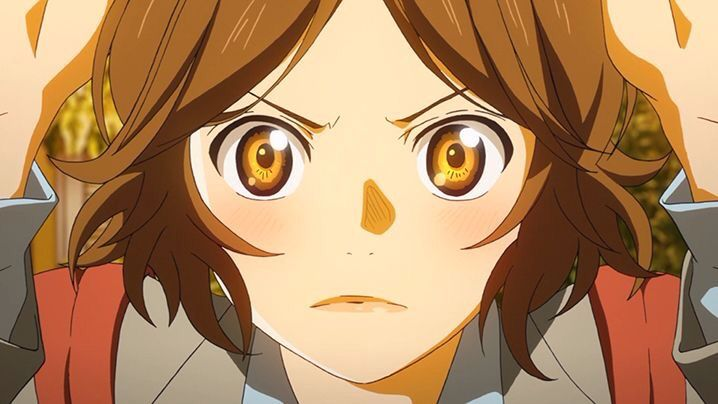

Tsubaki Sawabe
Tsubaki é amiga de infância de Kousei. Ela sempre foi para suas performances e o aplaudiu. Tsubaki costumava convidar Kousei para jogar fora, mas devido a seu tempo de prática com sua mãe, Kousei nunca poderia participar. Estando com Kousei por muito tempo, Tsubaki gradualmente assumiu o papel de "irmã mais velha". Kousei era aquele "irmãozinho sem esperança que ela tinha que cuidar". Ela costumava preparar presentes para Kousei e animá-lo quando ele estava triste, como quando sua mãe abandonou seu gato de estimação e ele não conseguia encontrá-lo. Em vez de se interessar por música, Tsubaki era atlético. Ela está no time de softball no ensino médio. Ela também foi um membro da equipe de softball no ensino médio.